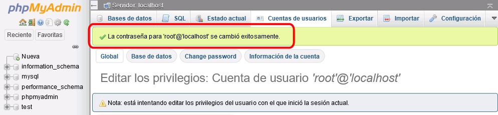
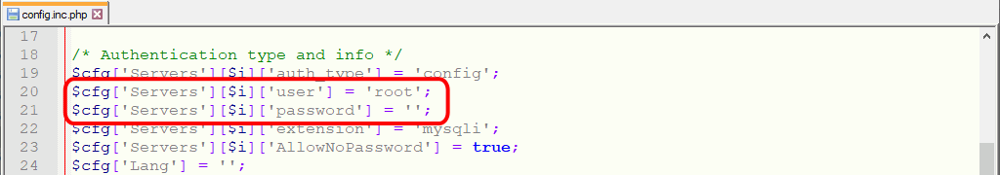

En esta lección se proponen soluciones detalladas de los ejercicios (1) de phpMyAdmin. Se recomienda intentar realizarlos primero sin recurrir a estas soluciones.
phpMyAdmin (1) 1 - phpMyAdmin de XAMPP
Cambio de contraseña de usuario de MySQL/MariaDB con phpMyAdmin:
Haga clic en Cuentas de usuario. Se mostrará la lista de cuentas de usuario. Haga clic en Editar privilegios de la cuenta root en localhost:
Haga clic en Change password:
Escriba la nueva contraseña y haga clic en Continuar:
Si el cambio de contraseña se produce, se mostrará un mensaje de éxito:

Cambio de contraseña de usuario de MySQL/MariaDB en archivo de configuración de phpMyAdmin:
Abra con un editor de texto el archivo de configuración config.inc.php:

Escriba la contraseña en la variable $cfg['Servers'][$i]['password']:
En cdlibre.org hay una sección dedicada a Bases de datos > MySQL, con información detallada sobre la última versión publicada de phpMyAdmin (entre otros).
Puede descargar phpMyAdmin de la web de phpMyAdmin: phpMyAdmin 5.1.1 (04/06/21). Si esta versión no se encuentra disponible en la web de phpMyAdmin, puede descargarla desde la página de Descarga de aplicaciones. Se recomienda esa versión ya que estos ejercicios se han preparado para ella.
phpMyAdmin se encuentra en la carpeta: Mis documentos > IAW > WebApps >phpmyadmin
phpMyAdmin se abrirá en la dirección: http://localhost/iaw/webapps/phpmyadmin/
Abra la URL http://localhost/iaw/webapps/phpmyadmin/ en el navegador. Se mostrará la página de inicio de phpMyAdmin, que solicita un nombre usuario y contraseña para poder acceder a MySQL/MariaDB:
phpMyAdmin (1) 5 - Alias
El alias puede ser el siguiente:
<IfModule alias_module>
# ...
# 2022-01-26. Alias para las aplicaciones webAlias /pma"C:\Users\NombreDeUsuario\Documents\IAW\WebApps\phpmyadmin"
<Directory "C:\Users\NombreDeUsuario\Documents\IAW\WebApps\phpmyadmin">
Options Indexes FollowSymLinks Includes ExecCGI
AllowOverride All
Require all granted
</Directory>
# ...
</IfModule>
phpMyAdmin (1) 6 - Entrar en MySQL/MariaDB como root sin contraseña
El zip de phpMyAdmin no incluye fichero de configuración, pero sí un ejemplo de fichero de configuración config.sample.inc.php. Copie este fichero y renómbrelo como config.inc.php.
Con la configuración inicial (la del fichero config.sample.inc.php que ha copiado), los usuarios no pueden conectarse a MySQL/MariaDB como root sin contraseña, pero al cambiar a true la variable de configuración $cfg['Servers'][$i]['AllowNoPassword'] ya se puede hacer:
phpMyAdmin (1) 7 - Establecer la contraseña de root de MySQL/MariaDB
Este ejercicio se resuelve como el ejercicio 1. La única diferencia es que el ejercicio 1 se debe realziar con el phpMyAdmin de XAMPP (al que se accede mediante la URL http://localhost/phpmyadmin), mientras que este se debe realizar con el phpMyAdmin que hemos instalado (al que se accede mediante las URLs http://localhost/iaw/webapps/phpmyadmin o http://localhost/pma). La aplicación phpMyAdmin que utilicemos no es relevante, puesto que todas ellas trabajan con la misma base de datos y es en ella que se modifica la contraseña de usuario.
phpMyAdmin (1) 8 - Actualizar phpMyAdmin
Puede descargar phpMyAdmin de la web de phpMyAdmin: phpMyAdmin 5.1.2 (22/01/22). Si esta versión no se encuentra disponible en la web de phpMyAdmin, puede descargarla desde la página de Descarga de aplicaciones. Se recomienda esa versión ya que estos ejercicios se han preparado para ella.
Cambiamos el nombre de la carpeta phpmyadmin a phpmyadmin-5-1-1 :
Los ficheros config.sample.inc.php de las versiones 5.1.1 y 5.1.2 no son idénticos (han añadido un par de opciones de configuración, aunque están comentadas), así que en vez de copiar el archivo config.inc.php de la carpeta 5.1.1 a la 5.12, quizás sería mejo copiar el archivo config.sample.inc.php de la versión 5.1.2, renombrarlo a config.inc.php (como hemos hecho en el ejercicio 3) y editar la opción de configuración $cfg['Servers'][$i]['AllowNoPassword'] (como hemos hecho en el ejercicio 6).
Cambiamos el nombre a phpmyadmin:
Borramos la carpeta 5.1.1 y el fichero zip (o lo movemos a otra carpeta por si necesitamos volver a descomprimirlo):